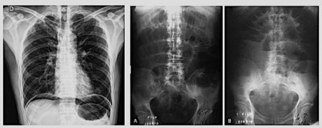
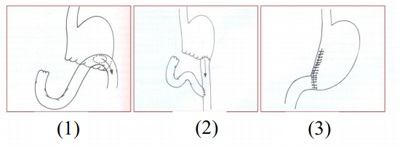
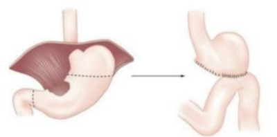
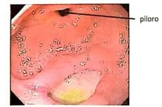

Questão 1 · Síndrome de ZollingerEllison · Manif estações Clínicas · 4000189065Paciente feminina, 55 anos, é portadora de diarreia crônica, dor em abdome superior, e com úlceras gástricas de localização atípica e de difícil controle. Durante investigação diagnóstica, aventa-se a hipótese de essa paciente ser portadora da síndrome de Zollinger-Ellison. Nesse caso, o tumor causador tem como localização mais frequente o:
A Antrogástrico.
B Duodeno.
C Figado.
D Pâncreas.
E Colédoco.
Questão 2 · Hemorragia Digestiva · 4000188718Qual a causa mais comum de hemorragia gastrointestinal alta?
A Lacerações tipo Mallory-Weiss.
B Laceração ou lesão de Cameron.
C Doença ulcerosa péptica.
D Varizes gastroesofágicas.
E Gastropatia por hipertensão portal.
Questão 3 · Esquemas de Tratamento · 4000187861Assinale a alternativa que contempla o tratamento de escolha para a infecção pelo H. pylori: (IV CONSENSO BRASILEIRO SOBRE A INFECÇÃO POR HELICOBACTER PYLORI - 2018)
A Ranitidina 150 mg 12/12 horas + Claritromicina 500 mg 12/12 horas + Amoxacilina 500mg 8/8horas, por 7 dias.
B Omeprazol 10mg 12/12 horas + Clariromicina 500 mg 12/12 horas + Amoxacilina 500mg 8/8 horas; por 14 dias.
C Omeprazol 20 mg 12/12 horas + Claritromicina 500 mg 12/12 horas + Amoxacilina 1 g 12/12 horas, 7 dias.
D Omeprazol 20 mg 12/12 horas + Amoxacilina 1 g 12/12 horas, 14 dias.
E Pantoprazol 40 mg 12/12horas + Claritromicina 500 mg 12/12 horas + Amoxacilina 1 g 12/12 horas, por 14 dias.
Questão 4 · Manif estações Clínicas · Úlcera péptica Perf urada · Diagnóstico e Classif icação das Úlceras · 4000187344Paciente masculino, 30 anos, encaminhado da unidade de pronto atendimento de nível secundário devido a hipótese de abdome agudo obstrutivo por bridas. Queixa-se de dor abdominal súbita há 8 horas, intensa, em facada, em andar superior do abdome, associada a um episódio de vômito, com piora progressiva durante a observação, sem melhora com analgésicos. Nega trauma recente. Tem histórico de laparotomia prévia por ferimento de arma de fogo. Ao exame físico: regular estado geral, desidratado, taquicárdico, afebril. Semiologia cardiopulmonar normal. Abdome distendido, doloroso difusamente, tenso, com defesa involuntária à palpação. São realizadas as radiogra as de abdome agudo abaixo. A principal hipótese diagnóstica é:

A Úlcera péptica perfurada.
B Pancreatite.
C Apendicite.
D Ureterolitíase.
Questão 5 · Síndrome de ZollingerEllison · 4000187249Assinale a alternativa que se associa a condições de aumento da secreção péptica gástrica como na síndrome de Zollinger- Ellison.
A Carcinoma epidermoide de estômago
B Gastrinoma
C GIST duodenal
D Insulinoma
Questão 6 · Manif estações Clínicas · Hemorragia Digestiva · 4000184649Homem de 72 anos queixava-se de epigastralgia em queimação há 3 semanas. É portador de HAS e faz uso de enalapril, sinvastatina e AAS para prevenção primária de eventos cardiovasculares. Realizou EDA. Após o resultado, recebeu a prescrição de omeprazol 20mg em jejum por 4 semanas, com resolução completa dos sintomas. Endoscopia Digestiva Alta (EDA): gastrite endoscópica enantematosa moderada do antro; úlcera na transição do corpo para o antro na curvatura menor, de fundo limpo, bordas regulares e planas, de 8mm, sem sinais de sangramento recente. Teste da urease negativo. Bx: gastrite crônica do antro; sem sinais de malignidade. Assinale a alternativa que apresenta a conduta MAIS adequada para esse paciente nesse momento.
A Substituir o AAS por prasugrel.
B Repetir a EDA.
C Manter o uso do omeprazol por tempo indeterminado.
D Suspender o uso do AAS.
Questão 7 · Diagnóstico e Classif icação das Úlceras · 4000184374Homem, 48a, retorna assintomático à Unidade Básica de Saúde. Há três meses iniciou tratamento com omeprazol, após endoscopia digestiva alta (EDA) ter evidenciado úlcera em corpo gástrico de 1cm, bordas planas e nítidas, fundo com brina, sem sangramento ativo. Pesquisa para FR=14irpm; restante sem alterações.
A Manter omeprazol até completar seis meses de tratamento.
B Repetir a EDA, independente da melhora dos sintomas.
C Repetir a EDA caso os sintomas persistam, após seis meses de tratamento.
D Suspender omeprazol e dar alta ambulatorial.
Questão 8 · Classif icação de Sakita · 4000183698Acerca da classificação de SAKITA para úlceras gástricas, é correto afirmar que H1 corresponde à úlcera
A com ilhas de tecido de regeneração, com convergência nítida de pregas e intensa hiperemia marginal.
B com bordas planas e nítidas, fundo com fibrina e, por vezes, restos necróticos
C com a formação de uma cicatriz vermelha com reação inflamatória adjacente residual.
D com fibrina tênue, discreta convergência de pregas e com hiperemia marginal.
E em que as bordas tornam-se bem definidas, às vezes elevadas, tomando forma mais nítida, e o fundo com fibrina espessa e clara.
Questão 9 · Classif icação de Johnson · 4000183697As úlceras gástricas são doenças importantes, que acometem a população brasileira, com uma siopatologia variada, sendo a infecção pelo localização e os níveis de acidez do estômago relacionados ao tipo I de úlcera gástrica são, respectivamente,
A corpo gástrico e níveis altos de acidez.
B pequena curvatura próximo à incisura angular e níveis altos de acidez.
C pequena curvatura próximo à incisura angular e níveis baixos ou normais de acidez.
D pré-pilórica e níveis baixos ou normais de acidez.
E pré-pilórica e níveis altos de acidez.
Questão 10 · Esquemas de Tratamento · 4000183691Quanto ao primeira linha.
A Levofloxacina e bismuto
B Testes fenotípicos ou genotípicos de susceptibilidade antimicrobiana
C Inibidor da bomba de prótons, doxiciclina e tetraciclina
D Inibidor da bomba de prótons isoladamente, até cessarem os sintomas
E Inibidor da bomba de prótons, amoxicilina e claritromicina
Questão 11 · Síndromes Pósgastrectomia · 4000183323Levando em consideração a incidência do refluxo alcalino em nosso meio, é INCORRETO afirmar que:
A Após gastrectomias parciais, refluxo biliar é comum.
B A maioria dos pacientes que apresentam essa patologia foram submetidos a gastrectomias parciais, sendo feita a reconstrução do tipo Billroth II.
C Todos os pacientes com refluxo alcalino serão sintomáticos durante o processo.
D Em pacientes que não respondem ao tratamento clínico, a conversão para reconstrução do tipo Y-de-Roux não é uma opção.
Questão 12 · Classif icação de Johnson · 4000183322A doença ulcerosa péptica é uma patologia relativamente comum na população. Conforme a classificação modi cada de Johnson, temos como correto:
A As lesões ulcerosas localizadas em região pré-pilórica são classificadas como tipo IV, e estão associadas à normocloridria.
B As lesões ulcerosas localizadas em região de pequena curvatura são classificadas como tipo I e estão associadas com hipocloridria.
C As lesões ulcerosas tipo V ocorrem somente próximo à cárdia e estão associadas ao uso de anti-inflamatórios não esteroidais.
D As lesões ulcerosas localizadas em grande curvatura são classificadas como tipo IV e estão associadas à hipercloridria.
Questão 13 · Diagnóstico · Obstrução · Apresentação Clínica · 4000183262Um homem de setenta anos de idade, com antecedentes de hipertensão arterial sistêmica e tabagismo, foi atendido no pronto-socorro devido a vômitos incoercíveis iniciados havia um dia. Encontrava-se em mau estado geral, desidratado, co m frequência cardíaca de 120 bpm e com pressão arterial de 80 mmHg x 60 mmHg. Seu abdome estava ácido e indolor, com distensão do epigastro. Foi passada uma sonda nasogástrica com débito inicial de 1.500 mL. Com base nesse caso hipotético, assinale a alternativa que apresenta o melhor exame para a determinação do diagnóstico etiológico desse paciente, após estabilização inicial.
A endoscopia digestiva alta
B exame contrastado de esôfago, estômago e duodeno
C tomografia computadorizada de abdome
D radiografia simples de abdome
E ultrassonografia de abdome
Questão 14 · Manif estações Clínicas · Apresentação Clínica · Tratamento · 4000183067Paciente do sexo feminino, 62 anos, tabagista, hipertensa e diabética, com queixa de sintomas dispépticos há cerca de 6 meses. Em atendimento médico prévio, foi prescrito Omeprazol 40mg diário, o qual fez uso por 4 meses, sem resposta satisfatória da sua sintomatologia, evoluindo com anorexia. Evolui com emagrecimento de cerca de 5kg no período. Nega febre, uso crônico de anti-inflamatórios não hormonais e história familiar de neoplasias do trato gastrointestinal. Você solicita endoscopia digestiva alta e esta evidencia lesão plana, com ulceração rasa e bordas elevadas, de cerca de 2cm, em incisura angularis. Qual das conclusões a seguir sobre o caso descrito é falsa?
A Os dados fornecidos não nos permitem diferenciar com segurança diagnósticos como úlcera benigna, neoplasia gástrica precoce ou neoplasia gástrica avançada.
B A observação de anorexia e perda de peso, associada ao fato de ulceração gástrica persistente a despeito do tratamento com inibidor de bomba de prótons pode sugerir etiologia maligna para a lesão descrita.
C A cromoscopia com uso de corantes, a ecoendoscopia e a injeção de solução salina na camada submucosa abaixo da lesão podem fornecer dados referentes a possível ressecabilidade endoscópica da lesão.
D Uma vez que a endoscopia não evidenciou lesão tipo Borrmann IV, a conduta mais segura é o tratamento empírico para Helicobacter pylori, a troca do omeprazol pelo esomeprazol e a repetição da endoscopia após 4 meses. ida oib pr ed
Questão 15 · Tratamento Cirúrgico da Úlcera Péptica · Gastroenterologia · Cirurgia · 4000182597Mulher, 72 anos foi submetida à tratamento cirúrgico por quadro de abdome agudo perfurativo secundário à úlcera perfurada a cerca de um mês. Não sabe referir a qual cirurgia foi submetida. Refere que, após alimentar-se, apresenta quadro de dor abdominal em cólicas, taquicardia, rubor facial e, frequentemente, diarreia explosiva. Os sintomas ocorrem minutos após a refeição, muitas vezes enquanto ela ainda se encontra sentada à mesa. Qual a cirurgia do estômago é mais frequentemente associada a esse quadro?
A Gastrectomia parcial com reconstrução a Billroth I.
B Gastrectomia parcial com reconstrução a Billroth II.
C Gastrectomia total.
D Gastrectomia subtotal com Y de Roux.
E Antrectomia sem vagotomia superseletiva.
Questão 16 · Diagnóstico e Controle de Cura · Esquemas de Tratamento · 4000182351Homem de 64 anos de idade compareceu previamente ao ambulatório com queixa de plenitude pós-prandial, saciedade precoce e epigastralgia há três meses. Tinha história prévia de diabetes mellitus tipo 2, estando em uso de metformina. Exame físico sem alterações. Apresentou o resultado de endoscopia digestiva alta solicitada previamente, que evidenciou gastrite erosiva de antro, sendo então iniciado o uso de inibidor de bomba de próton. Retorna ao ambulatório após 4 semanas, referindo melhora parcial dos sintomas. Nesta ocasião, apresentou o resultado do anatomopatológico da biópsia de estômago, que evidenciou ausência de atipias intestinais e pesquisa para H Qual é a conduta terapêutica de primeira linha a ser adotada neste momento e qual exame deverá ser solicitado posteriormente para controle de erradicação da infecção pelo
A Omeprazol, amoxicilina e claritromicina. Solicitar sorologia para
B Omeprazol, clindamicina e levofloxacino. Repetir a endoscopia digestiva alta.
C Omeprazol, amoxicilina e levofloxacino. Pesquisa do antígeno fecal para
D Omeprazol, metronidazol e levofloxacino. Repetir a endoscopia digestiva alta.
E Omeprazol, amoxicilina e claritromicina. Pesquisa do antígeno fecal para
Questão 17 · Perf uração · 4000181188Paciente masculino, 55 anos de idade, é admitido no pronto-socorro devido a quadro de dor abdominal súbita em região de mesogástrio, há 6 horas, associado a náuseas e vômitos esverdeados. Tem antecedentes de tabagismo e uso recente de anti-inflamatórios para tratamento de dor lombar. Ao exame físico, encontra-se descorado, desidratado, taquicárdico e normotenso. Ao exame abdominal, apresenta dor à palpação super cial e profunda, porém sem sinais de peritonite. Exames laboratoriais: Leucócitos: 16.000/uL; Bilirrubinas totais: 1,1 mg/dL; Amilase 393 U/L; Creatinina 1,5 mg/dL; Proteína C reativa: 150 mg/L. Considerando a principal hipótese etiológica para o caso, assinale a alternativa correta.
A A principal hipótese diagnóstica é a embolia mesentérica, devendo-se iniciar prontamente anticoagulação com enoxaparina.
B A radiografia simples de abdome sem o achado de pneumoperitônio exclui a hipótese diagnóstica de úlcera gástrica perfurada.
C As complicações mais comuns da doença ulcerosa péptica são o sangramento digestivo e a obstrução.
D Os achados tomográficos prováveis para esse caso incluem a presença de edema e borramento da gordura peripancreática.
E Em caso de úlcera péptica perfurada, há recomendação para antibioticoterapia de amplo espectro de maneira rotineira.
Questão 18 · Manif estações Clínicas · 4000193246MLD, feminina, 43 anos, artrose de joelho em uso excessivo de AINES, chega ao serviço de emergência relatando dor retroesternal 6/10, que começou após alimentação. A paciente relata que já apresentou episódios semelhantes em que a dor iniciou após se alimentar e cessou espontaneamente após algumas horas. Qual a principal hipótese diagnóstica?
A Angina instável
B Doença do refluxo gastroesofágico
C Úlcera duodenal
D Úlcera gástrica
Questão 19 · Esquemas de Tratamento · 4000191184Paciente do sexo masculino, 45 anos, com início recente de sintomas dispépticos, é submetido a endoscopia digestiva alta, que mostra úlcera em bulbo duodenal com pesquisa para Helicobacter pylori positiva. Assinale a alternativa correta em relação ao tratamento para erradicação da bactéria:
A Amoxicilina 1000 mg de 12/12 h, claritromicina 500 mg de 12/12 h, pantoprazol 40 mg de 12/12 h, por 14 dias.
B Amoxicilina 500 mg de 12/12 h, claritromicina 500 mg de 12/12 h, pantoprazol 40 mg de 12/12 h, por 14 dias.
C Amoxicilina 1000 mg de 12/12 h, claritromicina 1000 mg de 12/12 h, pantoprazol 40 mg de 12/12 h, por 7 dias.
D Amoxicilina 1000 mg de 12/12 h, claritromicina 500 mg de 12/12 h, pantoprazol 40 mg de 1x/dia, por 14 dias.
E Amoxicilina 500 mg de 12/12 h, claritromicina 500 mg de 12/12 h, pantoprazol 40 mg de 12/12 h, por 7 dias.
Questão 20 · Tratamento Cirúrgico da Úlcera Péptica · 4000177595A úlcera péptica duodenal é uma doença digestiva com múltiplos fatores etiológicos que pode necessitar de tratamento cirúrgico. Havendo complicações da doença ulcerosa duodenal, é mais recomendado realizar
A vagotomia de células parietais + antrectomia, em caso de perfuração.
B gastrujejunostomia + tratamento para H. pylori, em caso de obstrução.
C gastrectomia total + ligadura da a. gastroduodenal, em caso de hemorragia.
D rafia com patch omento + tratamento para H. pylori, em caso de intratabilidade.
Questão 21 · Tratamento Cirúrgico da Úlcera Péptica · 4000175857Sobre as reconstruções pós-gastrectomia assinale a correta.

A 1- Reconstrução a Billroth I; 2- reconstrução a Billroth II; 3- reconstrução em Y-Roux.
B 1- Reconstrução a Billroth II; 2- reconstrução a Billroth I; 3- reconstrução em Y-Roux.
C 1- Reconstrução a Billroth II; 2- reconstrução em Y-Roux; 3-reconstrução a Billroth I.
D 1- Reconstrução em Y-Roux; 2- reconstrução a Billroth II; 3- reconstrução a Billroth I.
E 1- Reconstrução em Y-Roux; 2- reconstrução a Billroth I; 3- reconstrução a Billroth II.
Questão 22 · Tratamento Cirúrgico da Úlcera Péptica · 4000175400A alteração fisiológica causada pela vagotomia troncular é a seguinte:
A Diminuição do volume da vesícula biliar
B Aumento da sensibilidade à histamina
C Aumento da secreção exócrina do pâncreas
D Diminuição do fluxo biliar pós-prandial
E Hipoplasia das células secretoras de gastrina
Questão 23 · Síndromes Pósgastrectomia · Gastrectomias · 4000175254Paciente de 68 anos, internado, com diagnóstico de abdômen agudo por úlcera gástrica perfurada, com necessidade de realização de gastrectomia total. Após alta, quais os cuidados que devem ser tomados em relação ao risco de anemia neste paciente?
A Paciente com risco de anemia, por deficiência de ácido fólico; deve ser feita, de imediato, a reposição endovenosa, devido estoque baixo dessa vitamina.
B Há risco de ferropenia, que pode ser precoce, devido sangramento, e também de deficiência de vitamina B12 a longo prazo.
C Há risco de deficiência de vitamina B12 precoce e a reposição da vitamina deve ser iniciada.
D Se dieta for adequada, não haverá qualquer necessidade de monitoramento de deficiências e anemia.
E Deve ser iniciada, e mantida por toda a vida, reposição de polivitamínico, via oral.
Questão 24 · Síndrome de ZollingerEllison · 4000168614Um homem de 50 anos, portador de doença ulcerosa péptica refratária ao tratamento clínico (inibidor de bomba protônica há oito semanas) evolui com esteatorreia (seis evacuações/dia). Foi solicitada endoscopia digestiva alta e o exame evidenciou múltiplas úlceras em antro gástrico, primeira porção do duodeno e duas úlceras em porção distal do duodeno. Com base na hipótese mais provável, o marcador que se elevado auxiliaria no diagnóstico seria:
A Colecistocinina
B Somatostatina
C Glucagon
D Gastrina
E Peptídeo intestinal vasoativo
Questão 25 · Classif icação de Johnson · 4000166553Paciente feminino, 61 anos de idade, obesa, submetida a endoscopia digestiva alta em decorrência de queixa dispéptica persistente. Relato de uso de anti-inflamatórios frequente, devido a dores lombares. Diagnosticou-se úlcera do fundo gástrico. De acordo com o sistema modi cado de classificação anatômica de Johnson para úlceras gástricas, assinale a alternativa que classifica corretamente a úlcera do paciente em questão.
A Tipo II.
B Tipo III.
C Tipo IV.
D Tipo V.
Revisar: possível letra faltando em enunciado
Questão 26 · Indicações de Pesquisa e Tratamento · Tratamento · Esquemas de Tratamento · 4000166368Leia o caso clínico a seguir. Paciente do sexo feminino, de 20 anos, com dispepsia há seis meses, sem tratamentos prévios. Foi submetida a endoscopia que evidenciou gastrite antral enantematosa leve. A avaliação histopatológica demonstrou presença de Helicobacter pylori em pequena quantidade no antro gástrico. Neste caso, a conduta inicial mais apropriada é:
A Lanzoprazol 30 mg/1x/dia, por 28 dias.
B Lanzoprazol 30 mg + domperidona 10 mg/2x/dia, por 28 dias.
C Lanzoprazol 30 mg/2x/dia + Claritomicina 500 mg/2x/ dia + Amoxicilina 1000 mg/2x/dia, por 14 dias.
D Lanzoprazol 30 mg/2x + Amoxicilina 1000 mg/2x + levofloxacina 500 mg/1x, por 10 dia
Questão 27 · Técnicas de Hemostasia Endoscópica · Hemorragia Digestiva · Classif icação de Forrest · 4000157298Homem, 59 anos, admitido na emergência após hematêmese e melena, estável hemodinamicamente. Hipertenso, em uso de enalapril, negando uso de anti-inflamatórios não esteroides. Submetido a uma endoscopia digestiva alta que revela úlcera gástrica pré-pilórica com vaso visível e teste da urease positivo. Qual a conduta neste momento?
A Tratar o
B Tratar a úlcera endoscopicamente com esclerose e cauterização.
C Rafia cirúrgica da úlcera.
D Apenas inibidor da bomba de prótons intravenoso.
Questão 28 · Tratamento Cirúrgico da Úlcera Péptica · Tratamento · 4000173402A figura abaixo ilustra uma alternativa para o tratamento das úlceras gastroduodenais complicadas por perfuração > 3cm. Trata-se de:

A Antrectomia com reconstrução em Y de Roux.
B Antrectomia com reconstrução a Bilroth II.
C Antrectomia com reconstrução a Bilroth I.
D Antrectomia com reconstrução a Siwert I.
Questão 29 · Síndromes Pósgastrectomia · Adenocarcinoma Gástrico · 4000147006Paciente de 50 anos, masculino, vai à consulta devido a quadro de dispepsia, sensação de plenitude pós-prandial, perda ponderal de cerca de 10Kg nos últimos 60 dias e dor abdominal esporádica. O paciente tem histórico de ser tabagista e hipertenso, atualmente em uso de hidroclorotiazida e losartan, e faz uso irregular de inibidor de bomba devido à gastrectomia parcial decorrente de úlcera gástrica há 10 anos. Após investigação, o paciente recebeu diagnóstico de neoplasia gástrica. Sobre esse quadro, assinale a alternativa correta.
A O diagnóstico mais provável, nesse caso, é linfoma gástrico.
B A presença de massa palpável em fundo gástrico, nódulo axilar e periumbilical é indicação para cirurgia de urgência.
C No adenocarcinoma, a consanguinidade e o tipo sanguíneo não são fatores de risco para a doença.
D A presença de gastrite atrófica e a cirurgia de gastrectomia parcial geralmente atrasam o surgimento de neoplasias gástricas.
E Em fases iniciais da doença, o prognóstico de cura é acima de 90%.
Questão 30 · Manif estações Clínicas · Obstrução · Hemorragia Digestiva · 4000146904Em relação à doença ulcerosa péptica, é CORRETO afirmar:
A Até 50% dos pacientes com hemorragia digestiva alta ulcerosa são assintomáticos, antes do episódio de hemorragia.
B A despeito do tratamento atual, a prevalência de obstrução gástrica em pacientes com úlceras pré- pilóricas ou duodenais é alta, em torno de 60%.
C As úlceras gástricas e duodenais com boa resposta clínica ao tratamento dispensam endoscopia de controle.
D A infecção pelo Helicobacterpylori associada à úlcera gástrica ocorre em torno de 95% dos casos.
E Presença de Helicobacter pylori não foi associada à prevalência de câncer gástrico.
Questão 31 · Esquemas de Tratamento · 4000146736Um homem de 45 anos procura atendimento devido à epigastralgia em queimação há 6 meses, a qual melhora com a alimentação e com o uso de ranitidina. Ele nega uso de anti-inflamatórios não esteroides, assim como etilismo e tabagismo. Realizou endoscopia digestiva alta que revelou gastrite erosiva crônica e úlcera duodenal. A pesquisa de H. pylori foi positiva. Ele apresenta história de alergia grave à benzilpenicilina (ana laxia). Assinale a alternativa que contém o tratamento recomendado para esse paciente.
A Inibidor de bomba de prótons em dose padrão +amoxicilina 1,0 g + claritromicina 500 mg, 2 vezes/dia, durante 7 dias.
B Inibidor de Bomba de Prótons em dose padrão, 2 vezes/dia + subcitrato de bismuto coloidal 120 mg, 4 vezes/dia + cloridrato de tetraciclina 500 mg, 4 vezes/dia + metronidazol 250 mg, 4 vezes/dia, durante 7 a 10 dias.
C Inibidor de bomba de prótons em dose padrão + amoxicilina 1,0 g, 2 vezes/dia nos primeiros 5 dias, seguido de Inibidor de bomba de prótons em dose padrão + claritromicina 500 mg + tinidazol 500 mg, 2 vezes/dia, por mais 5 dias.
D Inibidor de Bomba de Prótons em dose padrão, 2 vezes/dia +claritromicina 500 mg, 2 vezes/dia + metronidazol 500 mg, 2 vezes/dia, durante 10 a 14 dias.
E Inibidor de bomba de prótons em dose padrão +amoxicilina 1,0 g + claritromicina 500 mg, 2 vezes/dia, durante 10 dias.
Questão 32 · Síndromes Pósgastrectomia · 4000146476Qual o componente nutricional que mais se torna deficiente após ressecção gástrica total?
A Vitamina B12.
B Cálcio.
C Ácido fólico.
D Ferro.
E Zinco.
Questão 33 · Manif estações Clínicas · 4000146436Homem, 39 anos, refere, em atendimento ambulatorial, ter gastrite há muitos anos. Queixa-se de azia e queimação, com ritmicidade a três tempos (dói, come, passa) e alguns despertares noturnos com dor, com períodos de acalmia que podem durar meses. É tabagista, sem outras comorbidades, e refere ter pai e um irmão com sintomas semelhantes. Com base nesse caso, assinale a alternativa que apresenta o diagnóstico mais provável.
A Neoplasia de estômago.
B Úlcera duodenal.
C Úlcera gástrica.
D Gastrite aguda.
E Doença do refluxo gastroesofágico.
Questão 34 · Obstrução · 4000146316Pacientes portadores de ulceração duodenal aguda podem desenvolver na história natural da doença obstrução pilórica e cursar com vômitos frequentes, o que ocasiona um distúrbio na homeostase destes pacientes. Das alternativas a seguir, qual o distúrbio associado a esse quadro?
A Alcalose metabólica hipoclorêmica hipocalêmica.
B Acidose metabólica hipoclorêmica hipernatrêmica.
C Acidose metabólica hiperclorêmica hipercalêmica.
D Alcalose metabólica hiperclorêmica hiponatrêmica.
E Alcalose respiratória hipocarbônica hipercalêmica.
Questão 35 · Classif icação de Johnson · 4000146099As úlceras gástricas podem ocorrer em qualquer local no estômago, apesar de geralmente estarem presentes na curvatura menor, perto da incisura angularis. Sobre a classificação de Johnson, assinale a correta.
A Úlcera tipo I: sempre estão associadas à secreção excessiva de ácidos.
B Úlcera tipo II: geralmente estão associadas a uma elevada secreção de ácido, em combinação com uma úlcera duodenal.
C Úlcera tipo III: são úlceras em corpo gástrico e responsáveis por cerca de 90% das lesões.
D As úlceras gástricas do tipo IV. ocorrem em uma parte distal do corpo gástrico, próximo ao piloro.
Questão 36 · Diagnóstico e Controle de Cura · Indicações de Pesquisa e Tratamento · Doença Ulcerosa Péptica DUP · 4000145644Paciente feminina, 39 anos, queixando-se de epigastralgia há 5 meses, realiza endoscopia digestiva alta com úlcera ativa na parede anterior do bulbo duodenal, com teste de urease positivo. Assinale a alternativa correta.
A A cultura da mucosa gástrica é o método de escolha para o diagnóstico de H. pylori quando uma endoscopia é realizada.
B A sorologia é o método de escolha para se realizar confirmação da erradicação após o tratamento.
C Deve-se realizar o teste da uréase apenas em úlceras com sangramento recente.
D Histologia, cultura e teste rápido da urease são os testes invasivos para o diagnóstico de H. pylori.
Questão 37 · Síndrome de ZollingerEllison · 4000143967Paciente de 44 anos com história de úlceras duodenais a endoscopia digestiva alta, pirose, dor retroesternal, regurgitações, diarreia aquosa e perda ponderal de 5 kg há 90 dias. Fez tratamento com omeprazol sem melhora. O provável diagnóstico seria de:
A Gastrinoma.
B Pancreatite aguda.
C Tumor de cárdia.
D Acalasia.
Questão 38 · Estrutura e Mecanismos Patogênicos · Doenças Associadas ao H pylori · 4000143830Os mecanismos pelos quais a infecção crônica pelo H. Pylori contribui para a formação de úlcera duodenal incluem os relatados abaixo, EXCETO
A Estímulo da secreção de gastrina.
B Indução de metaplasia gástrica no duodeno.
C Aumento da produção de somatostatina.
D Estímulo de reação inflamatória e resposta imune significativas.
Questão 39 · Obstrução · 4000143536Pode-se afirmar que o distúrbio metabólico apontado como o mais típico da estenose hipertrófica do piloro é a
A alcalose metabólica hipoclorêmica
B acidose metabólica hipoclorêmica
C acidose metabólica hiperclorêmica
D alcalose metabólica hiperclorêmica
Questão 40 · Esquemas de Tratamento · 4000142574Leia o caso clínico a seguir. Paciente procedente do interior de Goiás, do sexo feminino, de 35 anos, com história prévia de tratamento de gastrite crônica relacionada ao H. pylori há um ano atrás, tendo utilizado o esquema tríplice (IBP + Amoxicilina 1 g + Claritromicina 500 mg), duas vezes ao dia por sete dias.Na sua última endoscopia, há 20 dias, evidenciou úlcera duodenal em cicatrização (fase H2 da classificação de Sakita) com anatomopatológico mostrando gastrite crônica leve, com atividade leve e presença do H. pylori (+/3+). Nesse caso, qual é a melhor conduta?
A Retratar com tratamento tríplice (IBP + Amoxicilina 1 g + Claritromicina 500 mg), duas vezes ao dia, dessa vez estendido por 14 dias.
B Retratar com tratamento tríplice (IBP + Amoxicilina 1 g + metronidazol 500 mg), duas vezes ao dia, por sete dias.
C Retratar com tratamento tríplice (IBP + Amoxicilina 1g), duas vezes ao dia, + Levofloxacina 500 mg, uma vez ao dia, por 14 dias.
D Retratar com tratamento quádruplo (IBP + Amoxicilina 1 g + metronidazol 500 mg + Furazolidona 200 mg), duas vezes ao dia, por sete dias.
Questão 41 · Indicações Relativas NãoObrigatórias · Tratamento · 4000141651Mulher de 45 anos apresenta dor epigástrica em queimação associada a sensação de plenitude pós-prandial, há aproximadamente 1 ano. Refere que alguns alimentos costumam causar mais sintomas, como frituras, refrigerantes e molhos industrializados. EDA: pangastrite enantemática leve e gastrite erosiva antral intensa associada a bulboduodenite erosiva leve com teste da urease positivo. O tratamento de escolha é
A amoxicilina 1 g, claritromicina 500 mg e IBP em dose plena, todos de 12/12 h, por 7 dias.
B amoxicilina 1 g, claritromicina 500 mg e IBP em dose plena, todos de 12/12 h, por 14 dias.
C levofloxacina 500 mg 1 x ao dia, claritromicina 500 mg e IBP em dose plena de 12/12 h por 7 dias.
D levofloxacina 500 mg 1 x ao dia, claritromicina 500 mg e IBP em dose plena de 12/12 h por 14 dias.
Questão 42 · Úlcera de Cushing · 4000141488Paciente, 48 anos, masculino, internado na unidade de terapia intensiva, em ventilação mecânica, por traumatismo cranioencefálico e pneumonia aspirativa, evolui com melena, apresentando queda de hemoglobina e necessidade de hemotransfusão. Sobre o caso, assinale alternativa correta.
A Está indicada endoscopia digestiva alta com provável ligadura de varizes de fundo gástrico.
B Está-se diante de um caso de gastropatia hipertensiva portal.
C É úlcera péptica relacionada à presença do H. Pylori.
D Provável hemorragia digestiva alta por lesão de Dieulafoy.
E Provável hemorragia digestiva alta por úlceras de Cushing.
Questão 43 · Tipos Especiais de Úlcera péptica · 4000141131Mulher, 28a, com queixa de queimação no andar superior do abdome, retorna para avaliação de resultado de endoscopia digestiva alta (EDA), realizada há 3 semanas. Antecedentes pessoais: uso regular de inibidor da bomba de protóns (IBP) há 2 anos e tabagismo 10 maços/ano. EDA: uma úlcera duodenal ativa e pesquisa de Helicobacter pylori negativa. A CONDUTA É:
A Indicar pesquisa de sangue oculto.
B Substituir por sucralfato por 2 semanas e repetir EDA.
C Indicar pHmetria e ajustar dose IBP.
D Manter IBP até a úlcera duodenal cicatrizar.
Questão 44 · Interação com Outras Drogas · 4000141117Inibidores de bomba de prótons são frequentemente prescritos em associação com outros medicamentos. Entretanto, algumas interações medicamentosas podem ser limitantes ou cursar com eventos adversos graves. EM RELAÇÃO À ASSOCIAÇÃO COM OMEPRAZOL É CORRETO:
A Fenobarbital; redução de ação anticonvulsivante.
B Fluconazol; aumento de toxicidade hepática.
C Clopidogrel; redução de atividade antiplaquetária.
D Warfarina; redução de atividade anticoagulante.
Questão 45 · Indicações de Pesquisa e Tratamento · 4000140633A descoberta do acomete 50% da população mundial, com maior prevalência em regiões de menor nível socioeconômico e baixo saneamento. A maioria das pessoas infectadas permanece assintomática, mas uma parte desenvolverá a doença. É necessário testar e, se comprovado, tratar a infecção por Hp quando há presença de
A metaplasia intestinal, tumor estromal gastrointestinal (GIST) e úlcera duodenal.
B doença ulcerosa péptica, uso prolongado de AAS e anti-inflamatórios, e doença do refluxo gastroesofágico.
C linfoma MALT gástrico, dispepsia funcional e vários pólipos hiperplásicos.
D gastrite atrófica, câncer gástrico em parente de primeiro grau e forte desejo do paciente.
Questão 46 · Ef eitos do Uso Crônico · Tratamento Farmacológico · Sintomas Típicos · 4000138976Um paciente do sexo masculino, de 35 anos de idade, procurou atendimento médico por apresentar epigastralgia, tipo queimação, associada a pirose havia três meses, principalmente após refeições e durante o sono. Foi realizado exame de endoscopia digestiva alta, que sugeriu o diagnóstico de doença do refluxo gastroesofágico (DRGE). Com relação ao caso clínico hipotético precedente e a aspectos relacionados à DRGE, julgue o item a seguir. Nos casos de pacientes com DRGE de longa data, o uso contínuo de inibidor de bomba de prótons (IBP) pode comprometer a absorção da vitamina B12.
A Certo.
B Errado.
Questão 47 · Diagnóstico e Controle de Cura · Os Métodos Invasivos · Os Métodos Não Invasivos · 4000134647Qual dos seguintes testes é o mais apropriado para um homem de 50 anos que completou um curso de amoxicilina, claritromicina e omeprazol há 06 semanas para uma úlcera duodenal associada ao Helicobacter pylori que estava causando sangramento gastrointestinal?
A Sorologia para Helicobacter pylori.
B Pesquisa do antígeno fecal para Helicobacter pylori.
C Teste respiratório com lactulose radiomarcada.
D Endoscopia Digestiva Alta e biópsia de mucosa duodenal.
E Endoscopia Digestiva Alta e teste de urease.
Questão 48 · Doença Ulcerosa Péptica DUP · Epidemiologia · 4000131033Sobre as úlceras pépticas, é correto afirmar que:
A A incidência de úlcera péptica tem aumentado nos últimos dez anos.
B Pacientes idosos estão mais sujeitos a complicações.
C Houve uma redução na incidência de complicações com a introdução dos inibidores da bomba de prótons.
D Houve um aumento na mortalidade devido à indução de cepas resistentes do H. pylori pelo tratamento antibiótico indiscriminado.
Questão 49 · Indicações de Pesquisa e Tratamento · Classif icação de Forrest · Indicações Absolutas Obrigatórias · 4000129911Paciente feminina, 45 anos, dá entrada no pronto socorro com quadro de melena e hematêmese com 12 horas de evolução. Encontra-se estável hemodinamicamente. Relata uso de anti-inflamatório para dor lombar nos últimos 10 dias. Realiza endoscopia digestiva alta que mostra uma lesão ulcerada bulbar classificada como Sakita A1 e Forrest IIa com teste de urease positivo. Em relação a este caso clínico, analise as assertivas abaixo: I) Esta lesão deve ser tratada endoscopicamente devido ao alto risco de ressangramento. II) O achado endoscópico, demonstrado pela classificação Forrest IIa, indica para uma lesão ulcerada com sangramento ativo. III) Esta paciente pode ser tratada clinicamente com a realização de um inibidor da bomba de prótons associado com um bloqueador de H2. IV) Devido a localização bulbar da lesão ulcerada, a erradicação do H. pylori não esta indicada como parte do tratamento clínico. Estão corretas as assertivas
A I apenas.
B I e II apenas.
C III e IV apenas.
D II, III e IV apenas.
E Todas assertivas estão corretas.
Questão 50 · Síndromes Pósgastrectomia · Cirurgia · 4000124184Paciente foi submetido a uma cirurgia de Billroth dois. Evoluindo no 15º dia pós-operatório com mal-estar, taquicardia e sudorese, logo após refeição rica em carboidratos. A principal hipótese diagnóstica é:
A Síndrome de estenose pilórica.
B Hérnia interna encarcerada.
C Hérnia interna com estrangulamento.
D Dumping.
E Obstrução intestinal.
Questão 51 · Síndromes Pósgastrectomia · Cirurgia · 4000121131Em relação as síndromes pós-gastrectomia, marque a alternativa correta:
A Síndrome de dumping: o bolo alimentar hipertônico passa para o lúmen do intestino delgado induzindo uma rápida passagem de líquidos extracelulares para o lúmen intestinal para tentar obter a isotonicidade, ocorre então uma distensão do lúmen intestinal provocando respostas autonômicas como taquicardia, rubor e tonturas.
B Síndrome da alça aferente: ocorre como resultado de uma obstrução parcial da alça aferente que é incapaz de esvaziar o conteúdo em seu interior. o tratamento é sempre clínico, com uso de inibidor de bomba de prótons e pro-cinéticos que irão auxiliar no esvaziamento do seu conteúdo.
C Gastrite de refluxo alcalino: após a gastrectomia, o refluxo de bile é comum, e o volume e a composição da bile são os fatores mais importantes no desenvolvimento dessa complicação. o tratamento com dieta pobre em lipídeos melhora os sintomas sem necessidade de tratamento medicamentoso ou cirúrgico.
D Obstrução da alça aferente: a obstrução é uma condição comum nos pacientes submetidos a gastrectomia subtotal a Billroth II, e a endoscopia digestiva alta auxilia na tentativa de desobstruir com uma taxa de sucesso de cerca de 80% dos casos.
E Atonia gástrica: ocorre o acúmulo de secreções pancreáticas e hepatobiliares no lúmen do estômago remanescente nos casos de gastrectomia subtotal a Billroth II. o tratamento indicado e sempre a conversão da anastomose a Billroth II em Billroth I ou a realização de Y de Roux.
Questão 52 · Síndrome de ZollingerEllison · 4000116318Quando está indicado obter um nível de gastrina sérica em jejum?
A Pacientes com queixa de dispepsia aguardando cirurgia
B História familiar de tumor de intestino
C Hipocalcemia
D Constipação inexplicável
E Pacientes com recidiva pós-operatória da úlcera
Questão 53 · Cirurgia · Úlcera por Estresse Lesão Aguda de Mucosa · 4000114238Na pro laxia da úlcera de estresse, em pacientes internados em UTI, ventilados mecanicamente por > de 48 horas, o nível de pH gástrico deve ser mantido acima de
A 3.
B 5.
C 2.
D 4.
Questão 54 · Síndrome de ZollingerEllison · 4000113982Homem de 60 anos com quadro clínico de dispepsia e com úlceras duodenais e gástricas recorrentes (endoscopia digestiva alta), apesar do uso de omeprazol em dose dobrada, com teste para Helicobacter pylori negativo e biópsia sem sinais de neoplasia. O exame que mais provavelmente ajudará no diagnóstico do paciente é:
A Repetir biópsia de mais de uma lesão gástrica e duodenal.
B Gastrina sérica.
C Anticorpo anti-endomísio.
D ASCA (Anti-Saccharomyces cerevisiae).
Questão 55 · Bloqueadores dos Receptores H2 · Indicações de Pesquisa e Tratamento · 4000112310Inibidores da Bomba de Prótons IBP Mulher de 21 anos de idade é avaliada com quadro de azia, pirose e dor epigástrica há 3 semanas. Nega uso de medicamentos, etilismo, tabagismo, viagem recente ou patologias prévias. Seu pai teve câncer gástrico aos 73 anos de idade. Exame físico: hidratada, corada, anictérica e afebril; sinais vitais normais; cardiopulmonar sem alterações; desconforto leve à palpação do andar superior do abdômen, sem massas ou órgãos palpáveis. Nesse momento, a melhor conduta é:
A prescrever o tratamento para erradicação do Helicobacter pylori.
B realizar teste terapêutico com antiácido e domperidona por 2 meses e reavaliar.
C realizar o teste terapêutico com ranitidina por 4 semanas e reavaliar.
D solicitar o teste respiratório para o Helicobacter pylori.
E solicitar uma endoscopia digestiva alta.
Questão 56 · Manif estações Clínicas · 4000105761Faz parte dos sinais e sintomas clássicos da Síndrome de Zollinger-Ellison:
A Úlcera péptica refratária, esofagite grave e/ou diarreia secretória persistente.
B Úlceras em cólon e reto, diarreia osmótica e metaplasia intestinal de esôfago cervical.
C Vômitos incoercíveis, do abdominal e perda ponderal.
D Icterícia, febre e dor abdominal.
Questão 57 · Manif estações Clínicas · Sorologia · Endoscopia Digestiva Alta EDA · 4000105484José, 39 anos, trabalha como feirante e vem queixando-se de dor epigástrica em queimação com irradiação superior até a região da faringe. Relata que apresenta os sintomas há vários anos, intercalando períodos de aumento ou diminuição da queixa. Já fez uso de omeprazol, sendo o último ciclo realizado há cerca de 5 anos, em conjunto com terapia de erradicação de Helicobacter pylori. Refere que a dor abdominal melhora com alimentação. Nega despertar noturno, perda de peso ou disfagia. Sobre o quadro de José, é correto afirmar que:
A a presença de dor que melhora com alimentação fala a favor de úlcera duodenal, sendo, portanto, uma indicação de endoscopia digestiva alta para diagnosticar tal condição
B no caso de José, os sinais de alerta têm valor preditivo positivo baixo. Mesmo quando presentes, a probabilidade de malignidade no exame endoscópico é baixa
C endoscopia digestiva alta é o exame padrão-ouro para diagnóstico de doença do refluxo gastresofágico, tendo um alto valor preditivo negativo. Um exame normal praticamente exclui a possibilidade dessa doença.
D a pesquisa sorológica para Helicobacter pylori pode ser útil, pois ele apresenta sintomas crônicos recorrentes. Esse exame detecta anticorpos lgM e lgG e é útil na diferenciação entre infecção ativa e infecção prévia
Questão 58 · Pancreatite Crônica · Diarreia Aguda Inf ecciosa · Gastrites · 4000103378Paciente com 47 anos, masculino, pardo, natural de São Bernardo, metalúrgico. Queixa-se de dor epigástrica de forte intensidade há 1 ano. Refere que há 8 anos iniciou quadro de dor epigástrica de fraca intensidade, sem irradiação, que piorava com alimentos gordurosos e pimenta e melhorava com hidróxido de alumínio. O período doloroso tinha duração de uma semana, seguido de acalmia por aproximadamente seis meses. De um ano para cá a dor piorou de intensidade e os períodos de acalmia diminuíram. Nega perda de peso. Etilista social e tabagista de 1 maço/dia há 25 anos. Exame físico normal. Qual sua hipótese diagnóstica e conduta inicial?
A Pancreatite crônica e ultrassom
B Gastrite e endoscopia
C Verminose e protoparasitológico
D Doença ulcerosa péptica e endoscopia
Questão 59 · Classif icação de Johnson · 4000086429De acordo com a classificação de Johnson, as úlceras gástricas localizadas somente na pequena curvatura são do tipo:
A I
B II
C III
D IV
Questão 60 · Hemorragia Digestiva · DUP Causada por AntiInf lamatórios Não Esteróides AINEs · 4000086111Homem, 44 anos, reconsulta por epigastralgia tipo queimação nas últimas semanas, que piora após as refeições e que o faz despertar durante o sono. Emagrecimento de 4 Kg neste período. Uso diário de ácido acetilsalicílico (AAS) 100 mg tamponado há três meses. Há 2 semanas, com cansaço fácil e sonolência excessiva, fato este que o motivou a procurar atendimento, quando foram solicitados exames e prescrito inibidor de bomba de prótons em dose dupla. Retorna com melhora parcial do quadro e com os seguintes resultados de exames: hematócrito 32%, hemoglobina 9,6 g/dL VCM 75 fL, leucócitos de 7400/mm³ (diferencial normal), plaquetas 258.000/mm³, coagulograma normal. Endoscopia digestiva alta evidenciou lesão no antro gástrico, próxima ao piloro, como mostra a imagem. Em relação a esse quadro clínico, assinale a alternativa correta.

A O uso de AAS tamponado não confere risco para lesão gástrica, mas para lesão duodenal.
B A biópsia da lesão gástrica deve ser feita sempre nas bordas para afastar a possibilidade de etiologia neoplásica.
C Se a pesquisa histológica do Helicobacter pylori no fundo da lesão for negativa, afasta- se a infecção por essa bactéria.
D O resultado do hemograma e da endoscopia digestiva alta indicam a necessidade de investigação colônica neste momento.
Questão 61 · Síndromes Pósgastrectomia · Cirurgia · 4000084063Paciente masculino, 75 anos, é submetido a gastrectomia parcial devido a adenocarcinoma de antro gástrico, com reconstrução a Bilroth II. Após cerca de 3 meses iniciou quadro de náuseas, vômitos, sensação de plenitude gástrica, dor abdominal em cólica e diarreia explosiva cerca de 20 a 30 minutos após ingesta alimentar. Exame físico sem alterações. Qual o diagnóstico mais provável para este paciente?
A Síndrome de Dumping precoce
B Fístula de anastomose gastro-jejunal
C Hérnia interna
D Síndrome de Dumping tardio
Questão 62 · Indicações de Pesquisa e Tratamento · DUP Causada por Hpylori · Doenças Associadas ao H pylori · 4000083735A principal razão para buscar erradicar o Helicobacter pylori em pacientes com úlcera péptica é para:
A reduzir a recorrência
B aumentar a velocidade da cura
C encurtar o período dos sintomas
D diminuir a incidência de complicações
Questão 63 · Indicações Relativas NãoObrigatórias · 4000080672Mulher, 50 anos de idade, portadora de artrite reumatoide, cujo tratamento exigirá a introdução de anti-inflamatórios não esteroides (AINES) por tempo prolongado, apresenta endoscopia digestiva alta com gastrite leve antral e teste da urease positivo. A conduta indicada para essa paciente é
A indicar o inibidor da bomba de prótons por 30 dias, antes do início dos anti- inflamatórios não esteroidais, e mantê-lo durante todo o período de uso desses AINES.
B tratar a gastrite com inibidor de bomba de prótons; repetir a endoscopia para observar resolução da inflamação e confirmar se há H. pylori por biópsia e, só após, iniciar os AINES.
C indicar a erradicação do Helicobacter pylori, seguida do uso de inibidor da bomba de prótons (IBP), enquanto durar o tratamento com anti-inflamatórios não esteroidais.
D tratar a gastrite com IBP; fazer um teste respiratório para confirmar a presença do H. pylori e trata-la, caso positivo. Só após, dar início ao tratamento com anti-inflamatórios não esteroidais.
Questão 64 · Classif icação de Johnson · 4000078321Nos pacientes com úlceras pépticas tipo I e IV de Johnson, é correto afirmar que:
A Há hipersecreção ácida e o ácido clorídrico é coenzima em sua formação.
B Há hipersecreção ácida e o ácido clorídrico é fator principal em sua formação.
C Não há hipersecreção ácida e o ácido clorídrico não participa em sua formação.
D Não há hipersecreção ácida, porém o ácido clorídrico é cofator em sua formação.
E Nenhuma das alternativas anteriores.
Questão 65 · Síndromes Pósgastrectomia · Tratamento do Adenocarcinoma Gástrico · Cirurgia · 4000074565Homem, 64 anos de idade, com antecedente cirúrgico de gastrectomia parcial com reconstrução tipo Billroth II há cerca de 30 anos devido a úlcera gástrica, procurou atendimento ambulatorial com queixa de episódios de dor em região epigástrica há 12 meses. Refere que nos últimos 5 meses evoluiu com di culdade de aceitação da dieta, inicialmente para alimentos sólidos, e no momento apresenta também disfagia para líquidos, com perda ponderal de 12kg. Paciente não possui outros antecedentes pessoais e relata não ter realizado qualquer exame nos últimos anos. Qual é a alternativa correta?
A O primeiro exame a ser solicitado deve ser de radiografia contrastado (EED, uma vez que uma das hipóteses é de megaesôfago.
B A gastrite alcalina é uma das principais hipóteses diagnósticas e deve ser instituído tratamento clínico com antiácidos locais.
C A principal hipótese diagnóstica é de neoplasia maligna no coto gástrico. Deve ser solicitada endoscopia digestiva alta com biópsia.
D Fazer teste terapêutico com inibidor de bomba de próton por 6 a 8 semanas. Se não houver melhora, solicitar endoscopia digestiva alta para complementar a avaliação diagnóstica.
Questão 66 · Tratamento Cirúrgico da Úlcera Péptica · Cirurgia · 4000072858Em paciente portador de úlcera gástrica pré-pilórica (Tipo III), com indicação de tratamento cirúrgico, a operação de escolha é:
A Gastrectomia subtotal com reconstrução a Billrtoh II.
B Gastrectomia total.
C Antrectomia + vagotomia troncular.
D Antrectomia com reconstituição em Y de Roux.
E Piloroplastia Heineke-Mikulicz.
Questão 67 · Cirurgia · Pancreatite Aguda · Colecistite Aguda · 4000065594Amanda, nascida e criada no berço do samba, sempre curtia os preparativos deste dia. Após a última feijoada de que participou, queixou-se de dor abdominal moderada seguida de náuseas e vômitos. Após a persistência do desconforto, preferiu procurar um serviço de emergência. No Pronto Atendimento foi avaliada; ao exame clínico, apresentava-se hemodinamicamente estável e afebril, com o aparelho cardiorrespiratório sem alterações, mas com o exame do abdome revelando peristalse presente, sendo o mesmo ácido e doloroso à palpação em hipocôndrito direito, com dor intensa a ponto de limitar a inspiração e que se irradiava para o ombro direito. Exames complementares foram solicitados, revelando o leucograma leucocitose com desvio para a esquerda e o hepatograma, elevação discreta das transaminases, da fosfatase alcalina e da bilirrubina total (à custa da fração direta). O exame de imagem, realizado na emergência, fechou a hipótese diagnóstica mais provável para o caso acima. Após 48 horas da abordagem inicial, Amanda foi submetida a tratamento cirúrgico. No pós-operatório, Amanda apresentou importante dor em andar superior do abdome, em barra, associada ao aparecimento de hematomas em região umbilical e anco direito, sendo internada no CTI. A conduta seguinte foi conservadora, permanecendo a paciente internada por longo período. Após a alta hospitalar, foi acompanhada no ambulatório da Cirurgia Geral, não apresentando novas intercorrências. Qual foi o provável exame de imagem solicitado na unidade de emergência para o esclarecimento do diagnóstico da patologia inicialmente apresentada pela paciente e seu resultado esperado?
A Tomografia computadorizada de abdome - presença de massa em região hipogástrica aderida a anexos
B Ultrassonografia abdominal - presença de cálculo impactado em infundíbulo da vesícula biliar com espessamento da parede da mesma
C Rotina de abdome agudo - presença de líquido livre na cavidade abdominal e pneumoperitôneo
D Endoscopia digestiva alta - presença de úlcera de fundo sujo na parede posterior do estômago
E Ressonância nuclear magnética - presença de massa em topografia de pâncreas com aspecto inflamatório
Questão 68 · Úlcera de Curling · Úlcera por Estresse Lesão Aguda de Mucosa · Úlcera de Cushing · 4000063399As úlceras de Curling e de Cushing estão relacionadas a qual condição clínica respectivamente:
A Vômitos incoercíveis e Helicobacter Pylori;
B Queimaduras e traumas cerebrais
C Diverticulite e aneurisma de aorta roto
D Vagotomia e piloroplastia
Questão 69 · Tratamento Cirúrgico da Úlcera Péptica · Síndromes Pósgastrectomia · Cirurgia · 4000062565O procedimento cirúrgico denominado ""Y de Roux"" está indicado para pacientes submetidos vagotomia troncular e gastrectomia à Bilroth II para tratamento de úlcera péptica e que apresentam como complicação pós-operatória:
A Esvaziamento precoce;
B Esvaziamento tardio;
C Síndrome da alça eferente;
D Antrectomia incompleta;
E Gastrite alcalina.
Questão 70 · Manif estações Clínicas · Perf uração · Manif estações Clínicas e Exame Físico · 4000061521Assinale a alternativa que apresenta, corretamente, em qual patologia o sinal de Jobert pode estar presente.
A Colangite supurativa ascendente.
B Colecistite aguda.
C Pancreatite aguda.
D Tumor de cabeça de pâncreas.
E Úlcera gástrica perfurada.
Questão 71 · Os Métodos Invasivos · Sorologia · Os Métodos Não Invasivos · 4000050004Paciente de 68 anos, sexo feminino, portadora de doença arterial coronariana, em uso de AAS 100 mg ao dia, procura assistência médica devido a dor epigástrica. É realizada uma endoscopia digestiva alta que mostra a presença de uma úlcera gástrica, a qual é submetida a biópsia. Histologia mostra a presença da bactéria Helicobacter pylori. A paciente é orientada a fazer o tratamento para a erradicação com esomeprazol, claritromicina e amoxicilina durante 14 dias e, após 30 dias do término do tratamento proposto, realizar um novo exame para verificar se houve a erradicação da bactéria. São exames utilizados para essa finalidade, EXCETO:
A histologia.
B teste da urease.
C pesquisa do antígeno fecal.
D teste da ureia respiratória.
E sorologia IGG; IGM.
Questão 72 · Perf uração · 4000049190A lesão ulcerada péptica representa uma solução de continuidade de mucosa que ultrapassa os limites da muscular da mucosa. Ao contrário da úlcera, a erosão não ultrapassa a muscular da mucosa da parede gástrica e, em razão de seu caráter superficial, mantém elementos glandulares em sua base que favorecem uma rápida cicatrização, sem sequelas. O(s) local(is) mais comum(ns) de perfuração por úlcera péptica é(são):
A incisura angularis e bulbo duodenal.
B região pré-pilórica.
C grande curvatura gástrica em terço médio.
D bulbo duodenal e pequena curvatura do antro gástrico.
E Ângulo de Hiss e corpo gástrico parede posterior.
Questão 73 · Obstrução · Hemorragia Digestiva · Perf uração · 4000046819Homem, 48 anos, fumante. Queixa-se de dor epigástrica importante e náusea. Realizou endoscopia digestiva alta que evidenciou úlcera duodenal em parede anterior da 1ª porção. Iniciado tratamento com omeprazol, erradicação do H. pylori e medidas dietéticas. Orientou-se o paciente para a possibilidade de complicações cirúrgicas e da necessidade de cirurgia para o tratamento dessas complicações. Qual das complicações abaixo é a mais frequente?
A Sangramento
B Obstrução pilórica
C Malignização
D Perfuração
E Zollinger - Ellisson
Questão 74 · Manif estações Clínicas · Epidemiologia · Indicações de Pesquisa e Tratamento · 4000045720Sobre a Doença Ulcerosa Péptica, é correto afirmar:
A H. pylori é um organismo produtor de urease que coloniza a mucosa do antro gástrico em quase 100% das pessoas com úlcera gástrica e 80% daqueles com úlcera duodenal.
B Estresse, café e álcool são fatores amplamente relacionados à doença ulcerosa péptica, diferentemente dos anti- inflamatórios não-hormonais que não têm qualquer comprovação.
C Os sintomas ulcerosos são caracterizados por ritmicidade e periodicidade.
D Celecoxibe, ibuprofeno e naproxeno estão igualmente associados ao risco de eventos gastrointestinais sérios e eventos cardiovasculares desfavoráveis.
E A pesquisa do H. pylori é desnecessária nos pacientes com história de doença ulcerosa péptica e que estão usando dupla anti-agregação plaquetária.
Questão 75 · Indicações de Pesquisa e Tratamento · DUP Causada por Hpylori · 4000042612Estrutura e Mecanismos Patogênicos Com relação à doença ulcerosa péptica, assinale a alternativa incorreta:
A Acredita-se que 90% das úlceras duodenais e aproximadamente 75% das úlceras gástricas estão associadas à infecção por H. pylori.
B Quando o H. pylori é erradicado como parte do tratamento da úlcera, a recidiva da úlcera é extremamente rara.
C O H. pylori é um bastonete Gram-negativo helicoidal com quatro a seis flagelos.
D O H. pylori é microaerófilo e pode viver em qualquer tipo de epitélio do trato gastrointestinal.
Questão 76 · Síndromes Pósgastrectomia · Cirurgia · 4000036825Paciente com passado de Gastrectomia total, com reconstrução em Y de Roux, vem com queixa de sudorese, sensação de desmaio, vômito e taquicardia, geralmente 40 minutos após ingesta alimentar. Qual a principal hipótese diagnóstica?
A Gastrite alcalina de refluxo.
B Síndrome da alça eferente.
C Síndrome de dumping precoce.
D Síndrome de dumping tardio.
E Síndrome da alça curta.
Questão 77 · Indicações de Pesquisa e Tratamento · 4000034055Mulher de 62 anos queixa-se de epigastralgia em queimação há dois meses, associada a náuseas após a alimentação. Nega pirose, regurgitação, vômitos, disfagia, sangramentos, anorexia, perda ponderal ou quaisquer outras queixas. Desconhece doenças prévias ou em familiares de primeiro grau. O exame físico não revela anormalidades. Esofagogastroduodenoscopia: esôfago e duodeno normais; leve hiperemia na mucosa antral; teste da urease positivo. Assinale a conduta MAIS ADEQUADA nesse caso.
A Prescrever amoxicilina, claritromicina e inibidor de bomba de prótons por sete dias esolicitar teste respiratório de urease após um mês.
B Prescrever amoxicilina, claritromicina e inibidor de bomba de prótons por 14 dias erepetir a endoscopia após um mês.
C Prescrever inibidor de bomba de prótons por oito semanas e, se os sintomaspersistirem, prescrever antidepressivo tricíclico.
D Prescrever inibidor de bomba de prótons por oito semanas e repetir a endoscopia seos sintomas persistirem.
Questão 78 · Síndrome de ZollingerEllison · 4000028667A doença que se caracteriza por diarreia, úlceras pépticas, tumor pancreático ou duodenal e hipergastrinemia é a:
A Doença de Whipple.
B Síndrome de Zollinger-Ellison.
C Espru tropical.
D Doença de Ménétrier.
Questão 79 · Tratamento Cirúrgico da Úlcera Péptica · Abdome Agudo Perf urativo · Complicações · 4000026215Paciente 35 anos, apresenta dor crônica em joelho esquerdo, faz uso contínuo de antiin amatório por conta própria. Há 15 dias queixa de dor epigástrica, em queimação, de forte intensidade, piorada nas últimas 2 horas, quando procurou serviço de urgência. Ao exame presença de dor em epigastro associado á descompressão dolorosa
A No Rx de abdome agudo é esperado presença de ar subdiafragmático na posição ortostática.
B Leucocitose com desvio à esquerda é mandatório no hemograma.
C O tratamento cirúrgico é uma gastrectomia com reconstrução em ""Y de Roux"".
D A úlcera duodenal que perfura é de parede posterior.
Questão 80 · DUP Causada por AntiInf lamatórios Não Esteróides AINEs · 4000023716Um paciente de 75 anos de idade procurou atendimento por diminuição do volume urinário e intolerância aos esforços, associada a dor torácica ventilatório-dependente e a dor lombar de forte intensidade. Realizou exames de laboratório, que evidenciaram: hemoglobina = 8,6 g/dL, hematócrito = 25%, leucócitos = 6.600/mm³, sem particularidades no diferencial, plaquetas = 190 mil/mm³, creatinina = 4,51 mg/dL, potássio = 6,3 mEq/L, cálcio sérico corrigido = 13 mg/dL, ureia = 109 mg/dL, reserva alcalina = 12 U/L. Ao exame físico, o paciente encontrava-se em regular estado geral, hipocorado, com presença de sopro sistodiastólico 2+/4+, murmúrio vesicular reduzido em 1/3 inferior direito, edema em membros inferiores 3+/4+, abdome sem particularidades e percussão-punho-lombar (PPL) negativo, PA = 180 mmHg X 90 mmHg, FC = 97 bpm, SatO2 = 92% em ar ambiente. Considerando esse caso clínico e os conhecimentos médicos correlatos, julgue o item a seguir. Pacientes com dor crônica fazem uso frequente de anti-inflamatórios não esteroidais (AINES), que são associados a úlceras pépticas, de localização gástrica, mais frequentes que no duodeno.
A Certo.
B Errado.
Questão 81 · Síndromes Pósgastrectomia · 4000022919Pac. importância do ""Y"" de Roux nesse procedimento?
A Profilaxia da deficiência de Vit. B12
B Profilaxia da S. de Dumping
C Profilaxia da gastrite alcalina
D Profilaxia da perda de peso pôs-gastrectomia
Questão 82 · Interação com Outras Drogas · Indicação de Prof ilaxia Medicamentosa · 4000014431São situações especiais em que está indicada a escolha do uso de inibidores H2 (Ranitidina) para pro laxia de úlcera de estresse em detrimento aos bloqueadores de bomba de prótons (Omeprazol) por motivos de interação medicamentosa:
A Pacientes em uso de ácido acetilsalicílico e clopidogrel.
B Pacientes em uso de ácido acetilsalicílico.
C Pacientes em uso de clopidogrel, fenitoína e corticoides via enteral.
D Pacientes em uso de clopidogrel e corticóide via enteral.
E Pacientes em uso de clopidogrel e fenitoína via enteral.
Questão 83 · Síndrome de ZollingerEllison · 4000006597Paciente com epigastralgia refratária, realizou endoscopia com identi cação de várias lesões ulceradas em estômago e dosagem de gastrina elevada. Que síndrome pode estar relacionada?
A Paterson Kelly.
B Zolinger Ellison.
C Mallory Weiss.
D Prune Belly.
Questão 84 · Esquemas de Tratamento · 4000001155Assinale qual o esquema terapêutico considerado como primeira opção para o tratamento do H. Pylori de acordo com o IV Consenso Brasileiro do H. Pylori:
A IBP (dose plena) + amoxicilina 1G + Claritromicina 500 MG 2 vezes ao dia – durante 14 dias.
B IBP (dose plena + amoxicilina 1G + Claritromicina 500 MG 2 vezes ao dia, durante 07 dias.
C A alternativa (A) e (E), durante 10 dias.
D IBP (dose plena) + amoxicilina 1G + Metronidazol 400 MG duas vezes ao dia 14 dias.
E IBP (dose plena 1 x dia) + tetraciclina 500 MG (6 em 6 horas) + Claritromicina 500 MG (2 x dia), durante 14 dias.
Questão 85 · Obstrução · Hemorragia Digestiva · Perf uração · 4000125549A respeito da doença ulcerosa péptica complicada, assinale a alternativa INCORRETA.
A O local mais acometido por perfuração é a parede anterior do duodeno.
B A hemorragia é a complicação mais comum.
C É a principal causa de morte e de indicação cirúrgica.
D As neoplasias são a principal causa de obstrução ao esvaziamento gástrico e a doença ulcerosa péptica é a causa de menos de dez por cento dos casos.
E A endoscopia digestiva alta é o exame de escolha na suspeita de úlcera péptica perfurada.
Questão 86 · Síndromes Pósgastrectomia · Cirurgia · 4000101011Mulher de 54 anos com antecedente cirúrgico de uma gastrectomia parcial com reconstrução gastrojejunal (tipo Billroth II) por úlcera hemorrágica, realizada há 10 meses, foi encaminhada ao ambulatório com hipótese diagnóstica de uma síndrome pós-gastrectomia. Relatava dor predominantemente no andar superior do abdômen com piora significativa após as refeições. Como fator de melhora, relata alívio imediato após ocorrência de vômitos, que na maioria das vezes era de aspecto biliosos e em jato sem fazer menção à presença de restos alimentares. Trazia consigo alguns exames laboratoriais que revelavam uma anemia discreta, eletrólitos, marcadores hepáticos e pancreáticos normais, o exame de urina não apresentava nenhuma alteração e a pesquisa de sangue oculto nas fezes era negativa. Diante do exposto, qual o diagnóstico mais provável?
A Gastrite alcalina de refluxo.
B Dumpingtardio.
C Síndrome da alça aferente.
D Síndrome de Zollinger-Ellison.
Questão 87 · Esquemas de Tratamento · 4000085652Considere as assertivas abaixo sobre Helicobacter pylori. I - As taxas de resistência do Helicobacter pylori para amoxicilina e para claritromicina são altas em muitos países, mas não no Brasil. II. - No tratamento, o uso de doses duplas de inibidores da bomba de prótons (40 mg de omeprazol ou equivalentes, 2 vezes/dia) com antibióticos aumenta as chances de erradicação da bactéria. III. - Em consequência da alta prevalência da infecção pelo Helicobacter pylori em nosso meio, o risco de reinfecção é alto em adultos após o tratamento de erradicação da bactéria. Quais são corretas?
A Apenas I
B Apenas II
C Apenas III
D Apenas I e II
E I, II e III
Questão 88 · Hemorragia Digestiva · Hemorragia por Úlcera Péptica HDA por DUP · 4000085385Homem, 33 anos, história prévia de etilismo, apresenta hemorragia digestiva alta. A Endoscopia Digestiva Alta (EDA) mostra varizes esofagianas de pequeno calibre e grande quantidade de sangue no estômago, re uindo pelo piloro. O diagnóstico mais provável é:
A Gastrite de estresse.
B Úlcera gástrica.
C Gastropatia hipertensiva.
D Úlcera duodenal.
Questão 89 · Síndromes Pósgastrectomia · Cirurgia · 4000084113Quanto às síndromes pós-gastrectomias, indique se são verdadeiras (V) ou falsas (F) as afirmativas abaixo. ( ) A síndrome de Dumping precoce ocorre de 20 a 30 minutos após a refeição e está associada à hipoglicemia. ( ) A síndrome de Dumping tardio deve ser tratada com refeições pequenas e frequentes e com a diminuição da quantidade de carboidratos. ( ) A gastrite alcalina apresenta dor que não alivia com a alimentação e o uso de antiácidos. ( ) A síndrome do antro retido ocorre devido a secreções biliares e pancreáticas no antro residual, diminuindo a gastrina e ocasionando o aparecimento de úlceras. ( ) O distúrbio metabólico mais comum é a anemia megaloblástica devido à diminuição de fator intrínseco. Assinale a alternativa que apresenta a sequência CORRETA, de cima para baixo.
A V - F - V - F - F
B V - F - F - V - F
C F - V - V - F - F
D F - F - V - F - V
E F - V - F - V - V
Questão 90 · Linf omas Gástricos · Doenças Associadas ao H pylori · 4000083871Assinale a alternativa que responde CORRETAMENTE à pergunta abaixo. Qual é o tratamento de primeira escolha na maioria dos casos de linfoma gástrico tipo MALT (mucosa-associated lynphoid tissue)?
A Ressecção cirúrgica.
B Quimioterapia.
C Radioterapia.
D Quimioterapia mais radioterapia.
E Erradicação do H. pylori.
Questão 91 · Classif icação de Johnson · Classif icação de Forrest · 4000081147Paciente apresentando hemorragia digestiva alta (HDA). Realizou Endoscopia digestiva que demonstrou uma úlcera gástrica em região pré-pilórica com coágulo aderido. Neste caso, podemos afirmar:
A Classificamos como Forrest IIB – Jonhson III
B Classificamos como Forrest IIC – Johnson II
C Classificamos como Forrest IIC – Jonhson III
D Classificamos como Forrest IIB – Jonhson II
Questão 92 · Classif icação de Johnson · 4000080956Dentre as úlceras gástricas, a tipo IV na classificação de Johnson é localizada:
A No duodeno.
B Na pequena curvatura na incisura angular.
C Na grande curvatura na região pré-pilórica.
D Na pequena curvatura perto da junção gastroesofágica.
Questão 93 · Tratamento Cirúrgico da Úlcera Péptica · Cirurgia · 4000080658Paciente de 50 anos de idade com úlcera gástrica na incisura angularis, apresenta hemorragia digestiva alta que não cessa com tratamento clínico e endoscópico. O procedimento cirúrgico indicado é:
A Gastrectomia distal com reconstrução a BI.
B Gastrectomia subtotal com reconstrução a BII.
C Hemigastrectomia com reconstrução em Y de Roux.
D Antrectomia com reconstrução a BI e vagotomia troncular.
Questão 94 · Síndromes Pósgastrectomia · 4000078550Homem, 65 anos, Hipertensão Arterial Sistêmica (HAS) e dislipidemia, em uso de enalapril e atorvastatina é internado com quadro de abdome agudo, hipotensão arterial e anemia. Laparotomia exploradora: úlcera duodenal perfurada com peritonite e hemoperitôneo. São feitas vagotomia e anastomose tipo Billroth I. Evolui favoravelmente, progredindo alimentação oral e andando com facilidade. Na segunda semana de internação, 3 horas após o almoço, subitamente apresenta tonteiras, confusão menta, palpitações e sudorese profusa. PA =120/70 mmHg; FC = 110 bpm SaTO₂ 95% em ar ambiente. O diagnóstico provavel é:
A Síndrome de dumping.
B Hemorragia digestiva aguda.
C Embolia pulmonar.
D Infarto do miocárdio em parede inferior.
Questão 95 · Sorologia · Análise Histopatológica · Pesquisa do Antígeno Fecal · 4000077037O teste com o melhor custo efetivo para avaliar a eficácia do tratamento de erradicação do Helicobacter pylori é o(a):
A antígeno fecal
B teste da urease
C sorologia no plasma
D endoscopia digestiva
Questão 96 · Manif estações Clínicas · Hemorragia Digestiva · Hemorragia por Úlcera Péptica HDA por DUP · 4000068604Nas úlceras duodenais sangrantes, a artéria geralmente acometida é a
A Gastroepiplóica
B Gastroduodenal
C pancreatoduodenal superior
D gástrica direita
Questão 97 · Teste da Secretina · Teste da Secretina · 4000068044O teste da secretina venosa é util no diagnóstico da síndrome de:
A Mirizzi.
B Gardner.
C Zollinger-Ellison.
D Plummer-Vinson.
E Verner-Morrison.
Questão 98 · Tratamento Cirúrgico da Úlcera Péptica · Cirurgia · 4000068008A gastrectomia distal associada à vagotomia troncular deve ser realizada no tratamento da úlcera gástrica dos tipos:
A I e II.
B II e III.
C I e IV.
D III e IV.
E II e V.
Questão 99 · Classif icação de Sakita · 4000062568A úlcera gástrica é resultado da ação cloridropéptica sobre a mucosa gástrica, havendo perda circunscrita da mucosa desde o revestimento epitelial até camadas mais profundas. Diante disso, Sakita descreveu o ciclo vital da úlcera gástrica. A classificação A2 de Sakita caracteriza-se a úlcera como: (LEITÃO OR, SOARES LFP, FREITAS LRT, HASHIBA K, PISANI JC. Endoscopia Digestiva Alta em: Coelho 3ª edição Aparelho Digestivo - Clínica e Cirurgia 2005).
A Recoberta de fibrina espessa e restos necróticos ou de pequenos coágulos, margens talhadas a pique, contornos irregulars, bordas eritematosas e mucosa circunjacente edemaciada
B Recoberta com fina camada de fibrina no fundo da lesão, fenômenos de reparação epitelial nas bordas e acumulação da convergência de pregas que são regulares
C Recoberta de fibrina mais clara no fundo da lesão, sem restos necróticos ou coágulos
D Recoberta de fina camada de fibrina no fundo da lesão, fenômenos de reparação epitelial nas bordas e acumulação da convergência de pregas que são regulares mas com epitelização das bordas mais acentuadas e a lesão é ligeiramente mais rasa
E Nenhuma das alternativas acima está correta
Questão 100 · Tratamento Cirúrgico da Úlcera Péptica · Cirurgia · 4000054557A respeito das complicações das úlceras pépticas gastroduodenais, assinale a alternativa correta.
A A complicação mais frequente é a estenose do piloro.
B Na presença de hemorragia, o tratamento cirúrgico está indicado de imediato.
C No tratamento cirúrgico das complicações, a tendência atual é limitar o procedimento à resolução da complicação, evitando-se o tratamento definitivo da úlcera.
D No caso de perfuração, o tratamento é clínico. A cirurgia está reservada para os casos com evolução desfavorável.
E No caso de estenose do piloro, o tratamento inicial é a erradicação do H. pylori.
Questão 101 · Fase Duodenal da Digestão · Anatomia e Fisiologia Gastroduodenal · Teste da Secretina · 4000054440Paciente do sexo masculino, 48 anos portador de úlcera duodenal, diagnosticada há cerca de 5 anos, realizando a terapia proposta. A despeito do boa adesão ao tratamento, permanece com os sintomas. Evoluindo, no período, com recrudescimento do quadro e, episódios de hemorragia digestiva. A dosagem de gastrina sérica foi de 207pg/mL. Qual dos abaixo é o mais importante para definir a presença de um gastrinoma?
A Serotonina
B Somatostatina
C Secretina
D Colecistocinina
Questão 102 · Síndromes Pósgastrectomia · Cirurgia · 4000041952Um médico em seu consultório, atende um paciente com 50 anos de idade com histórico de gastrectomia devido a doença ulcerosa há cerca de 2 anos. Refere que após a cirurgia tem apresentado episódios de dor abdominal, náuseas e vômitos, algumas vezes os sintomas melhoram espotaneamente e em outras evolui com diarreia explosiva. Relata também taquicardia, tonturas e visão turva. É sabido que as síndromes pós gastrectomia podem ocorrer em alguns pacientes, mas em pouquíssimos casos chegam a incapacitar ao paciente. Com relação às síndromes pós gastrectomia, assinale a alternativa correta. I - A síndrome de dumping é mais comum após gastrectomia parcial com reconstrução de Billroth II e menos comum na gastrectomia tipo Billroth I. II - O dumping ocorre em razão da rápida passagem do alimento de baixa osmolaridade do estômago para o intestino delgado. III - Os sintomas associados à síndrome de dumping precoce parecem ser secundários à liberação de vários agentes hormonais, como serotonina, neurotensina e enteroglucagon.
A I e III estão corretas.
B Somente III está correta.
C II e III estão corretas.
D I e II estão corretas.
Questão 103 · Doença Ulcerosa Péptica DUP · Diagnóstico e Classif icação das Úlceras · 4000034689São características endoscópicas de benignidade de uma úlcera gástrica, EXCETO:
A Bordas arredondadas, planas ou pouco elevadas
B Fundo limpo, recoberto por fibrina
C Amputação abrupta das pregas mucosas
D Tamanho menor 2 cm
Questão 104 · Úlcera por Estresse Lesão Aguda de Mucosa · 4000031905São considerados fatores de risco para úlcera gástrica associada ao estresse, EXCETO:
A Jejum prolongado.
B Ventilação mecânica prolongada.
C Instabilidade hemodinâmica.
D Traumatismo cranioencefálico.
Questão 105 · Diagnóstico e Controle de Cura · Análise Histopatológica · Teste Rápido da Urease · 4000024823A infecção por Helicobacter pylori (HP) é uma das infecções bacterianas crônicas mais comuns em humanos. De acordo com o IV Consenso Brasileiro sobre o HP,
A o teste rápido da urease é recomendado para controle de terapia de erradicação.
B o exame histológico é o método padrão-ouro para diagnóstico da infecção.
C a triagem do HP após a terapia de erradicação deve ser realizada pelo menos quatro semanas após o término do tratamento.
D a realização de cultura com antibiograma antes do início do tratamento é recomendada devido à crescente resistência bacteriana.
Questão 106 · Tratamento Cirúrgico da Úlcera Péptica · Obstrução · 4000021550Paciente masculino, 65 anos, evoluindo com plenitude pós prandial progressiva associada à perda de peso. Apresenta tratamento crônico de doença péptica, sendo por duas vezes diagnosticado úlcera de bulbo duodenal, nos últimos 03 anos. Fez tratamento com inibidores de bomba de prótons (IBP) por 12 semanas, sem melhora do quadro. Já tratou Helicobacter pylori por duas vezes. Realizou endoscopia digestiva alta que impossibilitou a passagem do aparelho ou de uma sonda alimentar, devido à estenose pilórica. As biópsias realizadas no exame foram negativas para malignidade. A conduta mais adequada é:
A Dobrar a dose do IBP e alta para casa com dieta líquida restrita.
B Internação e realização de gastrostomia endoscópica para estabelecimento de via alimentar.
C Internação, terapia nutricional parenteral e preparação para tratamento cirúrgico da estenose pilórica.
D Internação e cirurgia de urgência devido ao quadro obstrutivo alto.
Questão 107 · Diagnóstico e Classif icação das Úlceras · 4000015522Paciente feminina, 72 anos, hipertensa, diabética, renal crônica em tratamento conservador, dá entrada no pronto atendimento, com história de vômitos em borra de café. Realizada endoscopia de urgência: identi cada úlcera ativa em bulbo duodenal com estigmas endoscópicos de sangramento recente. Com relação à propedêutica, em caso de presença de úlcera péptica ativa, podemos afirmar que:
A Tanto a úlcera gástrica quanto a úlcera duodenal devem ser biopsiadas durante a realização de endoscopia para fins de diagnóstico diferencial com neoplasia, não havendo necessidade de realizar nova endoscopia após o tratamento para controle de cura.
B Apenas a úlcera gástrica deve ser biopsiada durante a realização de endoscopia para fins de diagnóstico diferencial com neoplasia, havendo necessidade de realizar nova endoscopia após o tratamento para controle de cura.
C Apenas a úlcera duodenal deve ser biopsiada durante a realização de endoscopia para fins de diagnóstico diferencial com neoplasia, sendo necessário realizar nova endoscopia após o tratamento para controle de cura.
D Tanto a úlcera gástrica quanto a úlcera duodenal devem ser biopsiadas durante a realização de endoscopia para fins de diagnóstico diferencial com neoplasia, havendo necessidade de realizar nova endoscopia após o tratamento para controle de cura.
E Apenas a úlcera gástrica deve ser biopsiada durante a realização de endoscopia para fins de diagnóstico diferencial com neoplasia, não havendo necessidade de realizar nova endoscopia após o tratamento para controle de cura.
Questão 108 · Epidemiologia · Indicações de Pesquisa e Tratamento · Pesquisa do Antígeno Fecal · 4000010116Paciente de 60 anos, sexo feminino, relata que há 6 meses iniciou um quadro de dor em região epigástrica de moderada intensidade, sem irradiação e 2 vezes por semana. Há 3 meses evoluiu com piora da intensidade e da frequência do sintoma. Refere dor epigástrica diária, principalmente após a alimentação. Foi à consulta com o gastroenterologista, que solicitou uma endoscopia digestiva alta. O exame histológico evidenciou gastrite crônica com presença de H. pylori. De acordo com o IV Consenso Brasileiro sobre a infecção por Helicobacter pylori, assinale a alternativa correta.
A A fase adulta é considerada o período de maior risco para aquisição de H. pylori.
B Os seres humanos são o único reservatório e principal fonte de transmissão de H. pylori.
C A pesquisa de H. pylori após a terapia de erradicação deverá ser realizada pelo menos 12 semanas após o término do tratamento.
D O teste do antígeno fecal usando anticorpos monoclonais é o exame padrão ouro para o diagnóstico não invasivo de infecção por H. pylori.
E O teste rápido da urease é o exame recomendado para controle da erradicação de H. pylori após o tratamento, sem a necessidade de exame adicional.
Questão 109 · Síndromes Pósgastrectomia · Cirurgia · 4000125908Paciente de 50 anos, submetida à gastrectomia parcial tipo Billroth II, por doença benigna. Duas semanas após a cirurgia evoluiu com dor epigástrica intensa após refeição, seguida de vômito volumoso contendo principalmente bile. Qual diagnóstico mais provável?
A Torção do coto gástrico.
B Fístula do bulbo duodenal.
C Síndrome da alça aferente.
D Síndrome de dumping.
E Úlcera de anastomose com hemorragia digestiva ativa.
Questão 110 · Síndromes Pósgastrectomia · Cirurgia · 4000094204O tratamento ideal da gastrite alcalina por refluxo após a gastrectomia com reconstrução a Billroth I (BI) e Billroth II (BII) é:
A Conversão de gastrectomia a BI em gastrectomia a BII
B Gastrectomia total
C Gastrojejunostomia em Y de Roux
D Realizar uma segunda gastroenteroanastomose
E Tratamento conservador
Questão 111 · Obstrução · 4000070192Pedreiro de 25 anos, natural do estado do Rio de Janeiro, vai a uma Unidade de Pronto Atendimento (UPA), referindo que nos últimos quatro meses tem apresentado dor epigástrica em queimação e di culdade para se alimentar, sentindo plenitude pós- prandial, o que restringe sua ingesta. Na última semana, tem apresentado vômitos frequentes, di cultando sua ingesta alimentar. Veio acompanhado pela mãe, que informa que o paciente perdeu 6 kg em seis meses. Ao exame físico: altura = 1,71 m; peso = 45 kg; PA = 100 x 50 mmHg; FC = 110 bpm; desidratado ++/4+; hipocorado +/4+; anictérico; acianótico e apirético. Ao exame do abdome, este encontra-se escavado, com abaulamento discreto na região epigástrica. A ausculta revela peristalse normal; à palpação está indolor, não se notam massas ou tumorações e há borborigmo quando se palpa a região discretamente abaulada. Imediatamente após o exame, o paciente apresentou vômito de aspecto esverdeado. Os exames pulmonar e cardiovascular não apresentaram alterações. Em quadros clínicos semelhantes a esse, o distúrbio hidroeletrolítico mais frequente é: Respostas: 1 12 23 34 45 56 67 78 89 100 111
A Alcalose hipomagnesiana.
B Acidose hiperclorêmica.
C Acidose hipernatrêmica.
D Alcalose hipocalêmica.